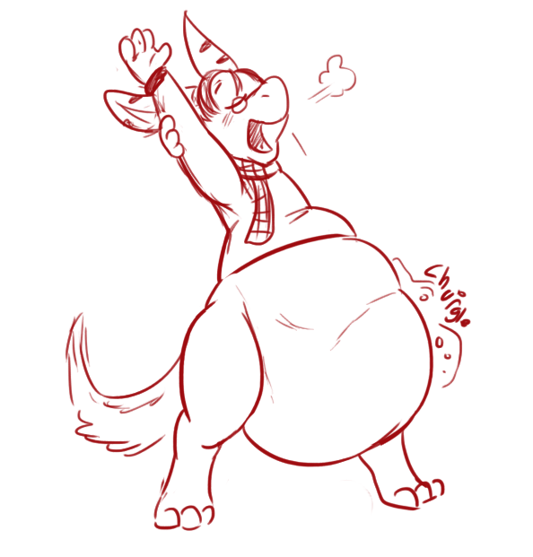

Things happened fast after that. Arn made a sign and crew loyal to his cause, probably the only ones attending this game rushed forward to grab me and Ziggy and pin us down to the floor. There were too many of them and i could only whince and hiss a squeak at the knee and foot on the back of my neck, back and wings.
I could not even curse at my foes properly, they left nothing to chance.
Ziggy yelped briefly out of sight. I could hear her the sound of her struggle and frustration. She said something but her voice ominously cut off quickly.
There was the sound then. That wet smacking sound of mouth and saliva. Ziggys muffled cry came through it for a moment but it was soon over, too quickly. A quick belch and a satisfied exhalation and Ziggy was gone. Swallowed whole.
A pair of feet appeared ahead of me, Wulf feet. I strained to look up then and could only see the fur of a domed sagging large gut. He couldnt mean to actually...!
Wulf greed knew no bounds, i was hoisted up off my feet and presented to Keepers face.
"Im of two mind about this Captain. On one side i respect you. You are obviously strong and capable, just like Ziggy was. His stretched belly emitted muffled low wet grumble as someone within struggled.
On the other... the thought of adding both your strengths to mine, legally i might add, is too much to pass up.
"Goodbye Captain. And Welcome to 'Me'."
His green maw presented itself. Before i could object or get a chance to kick him in the face i was crammed in head-first. Tongue rippled under my chin, the gullet opened up and with a push from behind i slid into darkness.
-
His muscles would just contract and squeeze all around me and cram me into that already taut and sagging fat tum, the belly stretches even further to make room for me. His gut is hot and sloshing with the still digesting remnants of his previous large Raptorian meal, but im still forced into the stomach with ease, pushing contents out of the way briefly before they gurgleslosh in around me and surround me in their muck. Im not alone, Ziggys muffled whine resonate from close-by, but i can not make out head nor tail in the darkness.
The pressure, heat and stale air is overpowering, i splash and buck and cause the stomach to loudly 'gwuurrbblee' wetly around us. A sudden deep rumble and the stomach tightens ever closer as Keeper belches loudly and wetly around us. I spit, gag and moan in embarrassed humiliation, for a brief moment bucking and twisting and slushing against the growing constriction of muscles grinding the digestive juices and muck against me. I dont want to perish here, like this, to this person. Smug and coy little "book-Keeper". I can imagine him laying back in his seat, arms to his sides and his huge noisy and wiggling stomach in his lap shown off for all to see.
Those taunting words! I dont want to belong to him, become him.
Another deep gurgle and im nearly engulfed in muck again, rolled around and churned hard. Im briefly pressed up against Ziggy, but its no comfort, i can hardly move and she's not making it easier. Im about to make a shout but whatever pause the stomach was in due to my arrival is over. I digest... im digesting...! He's digesting us....! Gluuurrrgggggkble~
The dissapearance of both the captain and a cadet becomes a suprisingly well-kept secret aboard the ship. Though there are muttered protests, no one volunteers to "Go in and get them". In the end, facts remained that Captain Avolc had voluntarilly agreed to the rules, something all present testified
Your legacy as a captain of the west-sea was short. As added girth to a proud Wulf book-Keeper you are a bragging right and a good tale told smugly after a cup or two.
